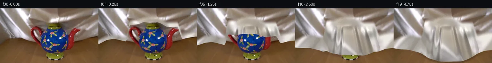

![首帧]()

Round 00
2026-11-05T17:15:19.462591+00:00像素候选变化代码 +160/−0inspection 更新
pixels 0022d98b1a66fa16 · code 85ba2fd0883872de
查看本轮 generate.py 真实 diff
--- previous/generate.py
+++ current/generate.py
@@ -0,0 +1,160 @@
+"""Handcrafted image-space satin drape from the one supplied RGB image."""
+from pathlib import Path
+import numpy as np
+from PIL import Image, ImageDraw
+from scipy.ndimage import map_coordinates, gaussian_filter
+from artifact_io import save
+
+ROOT=Path(__file__).resolve().parent
+SOURCE=np.asarray(Image.open(ROOT/'first_frame.png').convert('RGB'),dtype=np.float64)
+H,W=144,256
+S=3
+Y,X=np.mgrid[0:H*S,0:W*S].astype(float)
+X=(X+.5)/S-.5
+Y=(Y+.5)/S-.5
+
+def smooth(a):
+ a=np.clip(a,0,1)
+ return a*a*(3-2*a)
+
+def sample(im,x,y):
+ return np.stack([map_coordinates(im[:,:,c],[y,x],order=1,mode='nearest') for c in range(3)],-1)
+
+# The starting leading edge stays just above the silhouette. At the edges it
+# coincides with the visible, original silk/table boundary.
+anchors=np.array([0,20,39,61,73,80,91,103,117,127,149,161,178,193,206,217,235,255])
+initial=np.array([94,83,79,84,87,43,41,40,34,33,33,37,47,47,47,80,76,73])
+# A wide piece of silk hangs from the sides and pools below the pot in front.
+final=np.array([104,107,109,115,120,124,130,134,139,140,141,140,138,133,126,119,113,109])
+start=np.interp(X,anchors,initial)
+finish=np.interp(X,anchors,final)
+# Smooth the piecewise contour only horizontally, retaining measured crown.
+start=gaussian_filter(start,(0,1.8*S))
+finish=gaussian_filter(finish,(0,2.4*S))
+source_hi=sample(SOURCE,X,Y)
+# Material is a clean patch of the actual photographed silk at the left.
+# It contains no teapot or tabletop pixels.
+silk=gaussian_filter(SOURCE[:73,:77],(.35,.35,0))
+
+
+def render(k):
+ t=k/4
+ p=smooth(t/3.35)
+ # Damped settling after contact, less than one output pixel.
+ settling=.65*np.exp(-max(0,t-3.0)*2.6)*np.sin(max(0,t-3.0)*7.5)
+ hem=start+(finish-start)*p
+ hem+=p*(.75*np.sin(X/14+.5)+.35*np.sin(X/6.5))
+ hem+=settling*np.exp(-((X-145)/67)**2)
+ hem+=.45*np.sin(t*2.5+X/30)*np.sin(np.pi*p)
+ alpha=np.clip((hem-Y+.45)/.9,0,1)
+
+ # A depth field for cloth supported by the lid, body, handle and spout.
+ # The low part hangs continuously toward the table. This is not a cloth
+ # solver: normals, ridges and sheen are analytic image-space functions.
+ mound=27*np.exp(-((X-143)/43)**4-((Y-87)/49)**4)
+ lid=13*np.exp(-((X-141)/22)**2-((Y-42)/10)**2)
+ handle=16*np.exp(-((X-93)/14)**2-((Y-59)/18)**2)
+ spout=20*np.exp(-((X-194)/15)**2-((Y-59)/14)**2)
+ depth=mound+lid+handle+spout
+ fold_start=smooth((Y-43)/18)
+ fold_end=1-.3*smooth((Y-128)/15)
+ wave=1.1*np.sin(t*2.2)*np.sin(np.pi*p)
+ paths=[(103,-.14,6.0,4.5),(120,-.12,5.3,3.3),
+ (153,.19,5.0,3.6),(177,.23,6.5,4.6),(200,.20,4.0,4.0)]
+ for x0,slope,amp,width in paths:
+ path=x0+slope*(Y-48)+wave*np.sin(Y/30+x0)
+ spread=width+.035*np.maximum(Y-50,0)
+ depth+=amp*np.exp(-((X-path)/spread)**2)*fold_start*fold_end
+ depth-=amp*.45*np.exp(-((X-path-spread*1.5)/(spread*.65))**2)*fold_start
+ dy,dx=np.gradient(depth,1/S,1/S)
+ nx=-dx*.8;ny=-dy*.8;nz=np.ones_like(nx)
+ nl=np.sqrt(nx*nx+ny*ny+nz*nz)
+ nx/=nl;ny/=nl;nz/=nl
+ light=np.array([-.38,-.48,.79]);light/=np.linalg.norm(light)
+ diffuse=np.maximum(0,nx*light[0]+ny*light[1]+nz*light[2])
+ half=light+np.array([0,0,1]);half/=np.linalg.norm(half)
+ ndh=np.maximum(0,nx*half[0]+ny*half[1]+nz*half[2])
+ spec=ndh**20
+
+ # Satin texture travels with the advancing piece. An inverse coordinate
+ # warp spreads the source folds over the new draped surface.
+ u=(X-70)/2.1+3*np.sin((Y-35)/34)+3*dx
+ # Reflect the clean patch outside the central mound without hard seams.
+ u=3+np.abs((u-3+70)%140-70)
+ v=9+(Y-26)*.48-10*p+2.4*np.sin((X-140)/26)
+ v=np.clip(v,2,69)
+ tex=sample(silk,u,v)
+ tex=tex*.57+np.array([215,207,191])*.43
… diff truncated; 73 more lines …